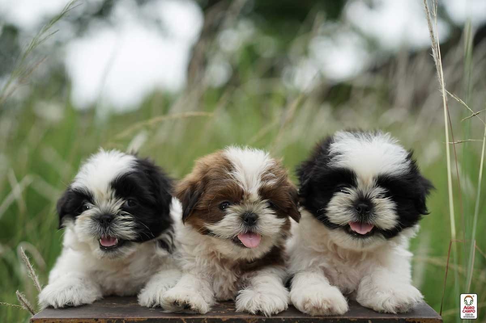

Huellas de Amor
Adopta · Cuida · Cambia una vida
Inicio
Mascotas
Favoritos
Galería
Sobre nosotros
3
Ellos también
merecen un
hogar
♡
Adopta una mascota y dale una segunda
oportunidad a una vida llena de amor.
Ver mascotas

♡
Una adopción
cambia dos vidas